사이프러스가 있는 밀밭
Wheat Field with Cypresses
· 1889
Vincent van Gogh
빛과 풍경
작품 정보와 출처
Oil on canvas
28 13/16 × 36 3/4 in. (73.2 × 93.4 cm)
The Metropolitan Museum of Art · 1993.132
4000 × 3184px · CC0
미술관 원문 ↗ · 공개 이용 정책 ↗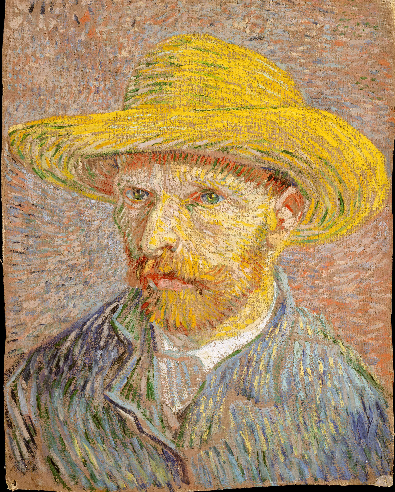
밀짚모자를 쓴 자화상
Self-Portrait with a Straw Hat (obverse: The Potato Peeler)
· 1887
Vincent van Gogh
인물과 일상
작품 정보와 출처
Oil on canvas
16 x 12 1/2 in. (40.6 x 31.8 cm)
The Metropolitan Museum of Art · 67.187.70a
2829 × 3520px · CC0
미술관 원문 ↗ · 공개 이용 정책 ↗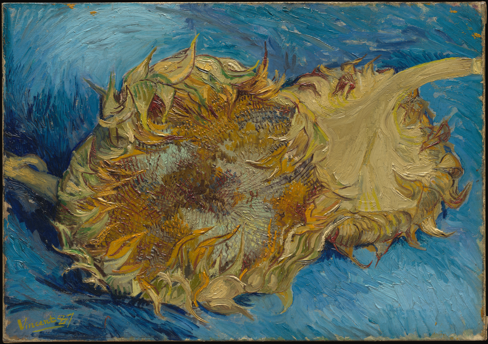
해바라기
Sunflowers
· 1887
Vincent van Gogh
꽃과 사물
작품 정보와 출처
Oil on canvas
17 x 24 in. (43.2 x 61 cm)
The Metropolitan Museum of Art · 49.41
4000 × 2826px · CC0
미술관 원문 ↗ · 공개 이용 정책 ↗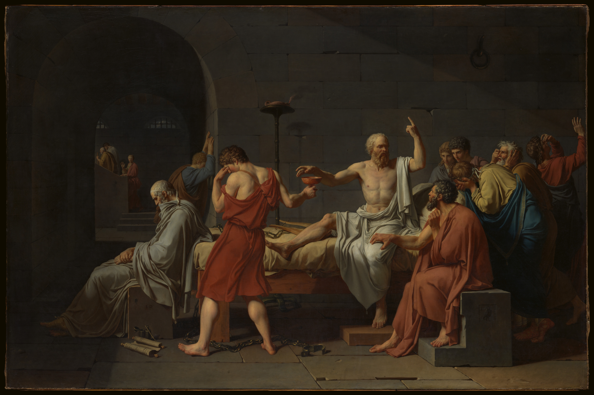
소크라테스의 죽음
The Death of Socrates
· 1787
Jacques Louis David
인물과 일상
작품 정보와 출처
Oil on canvas
51 x 77 1/4 in. (129.5 x 196.2 cm)
The Metropolitan Museum of Art · 31.45
4000 × 2663px · CC0
미술관 원문 ↗ · 공개 이용 정책 ↗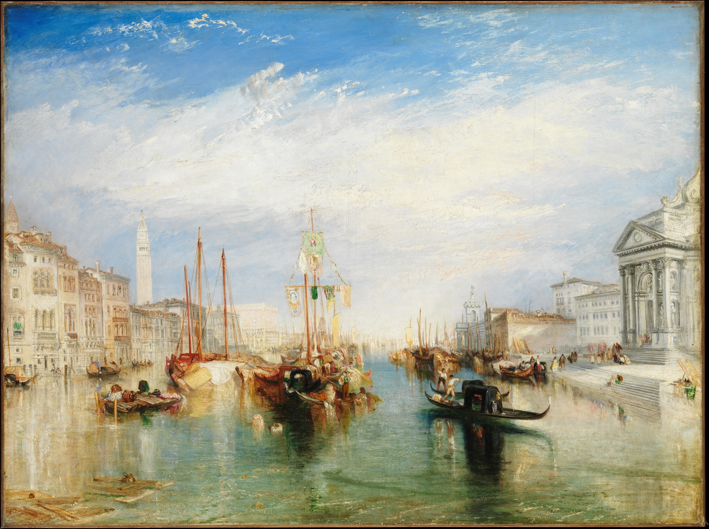
마돈나 델라 살루테 현관에서 본 베네치아
Venice, from the Porch of Madonna della Salute
· ca. 1835
Joseph Mallord William Turner
빛과 풍경
작품 정보와 출처
Oil on canvas
36 x 48 1/8 in. (91.4 x 122.2 cm)
The Metropolitan Museum of Art · 99.31
1959 × 1461px · CC0
미술관 원문 ↗ · 공개 이용 정책 ↗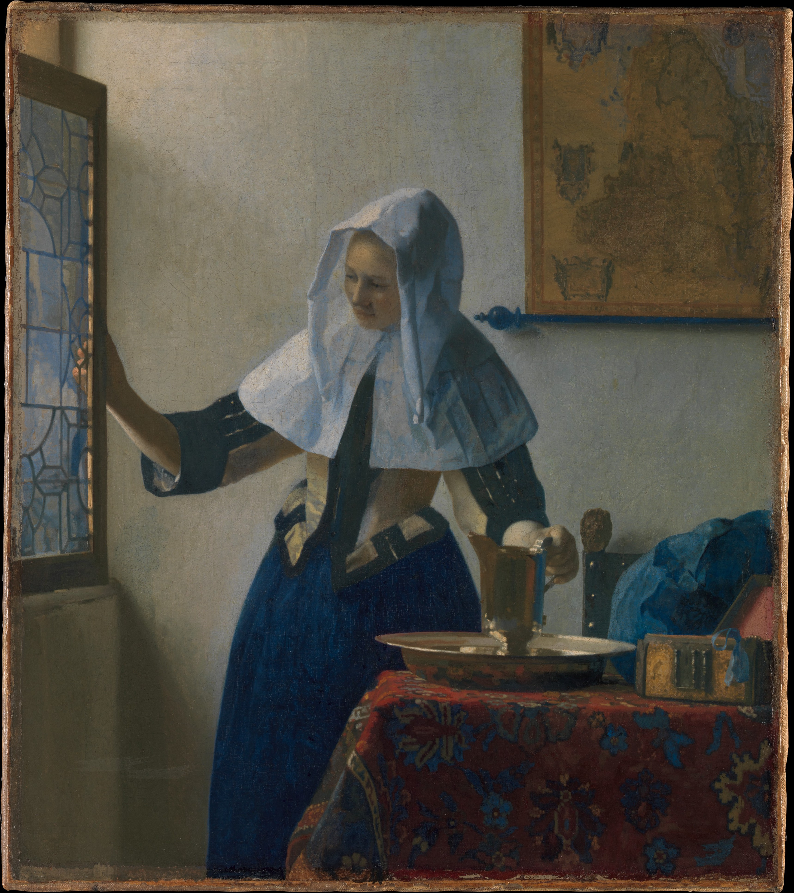
물주전자를 든 젊은 여인
Young Woman with a Water Pitcher
· ca. 1662
Johannes Vermeer
인물과 일상 · 꽃과 사물
작품 정보와 출처
Oil on canvas
18 x 16 in. (45.7 x 40.6 cm)
The Metropolitan Museum of Art · 89.15.21
3437 × 3866px · CC0
미술관 원문 ↗ · 공개 이용 정책 ↗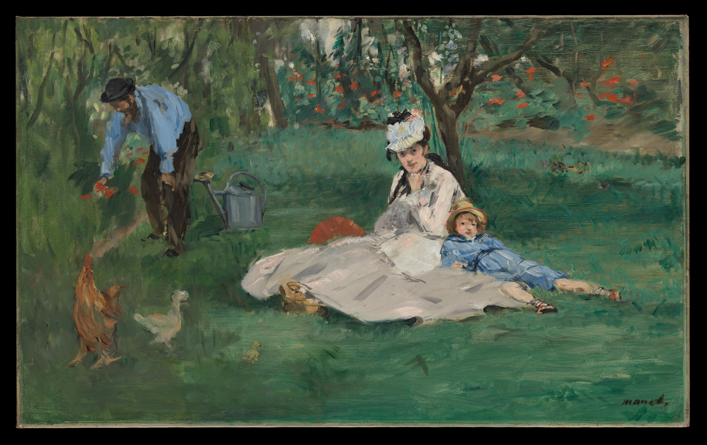
아르장퇴유 정원의 모네 가족
The Monet Family in Their Garden at Argenteuil
· 1874
Edouard Manet
인물과 일상 · 꽃과 사물
작품 정보와 출처
Oil on canvas
24 x 39 1/4 in. (61 x 99.7 cm)
The Metropolitan Museum of Art · 1976.201.14
4000 × 2518px · CC0
미술관 원문 ↗ · 공개 이용 정책 ↗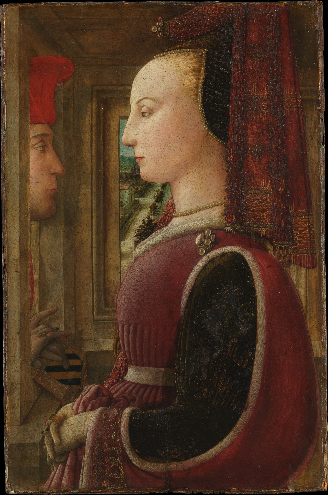
창가의 남성과 여인의 초상
Portrait of a Woman with a Man at a Casement
· ca. 1440
Fra Filippo Lippi
인물과 일상
작품 정보와 출처
Tempera on wood
25 1/4 x 16 1/2 in. (64.1 x 41.9 cm)
The Metropolitan Museum of Art · 89.15.19
2568 × 3875px · CC0
미술관 원문 ↗ · 공개 이용 정책 ↗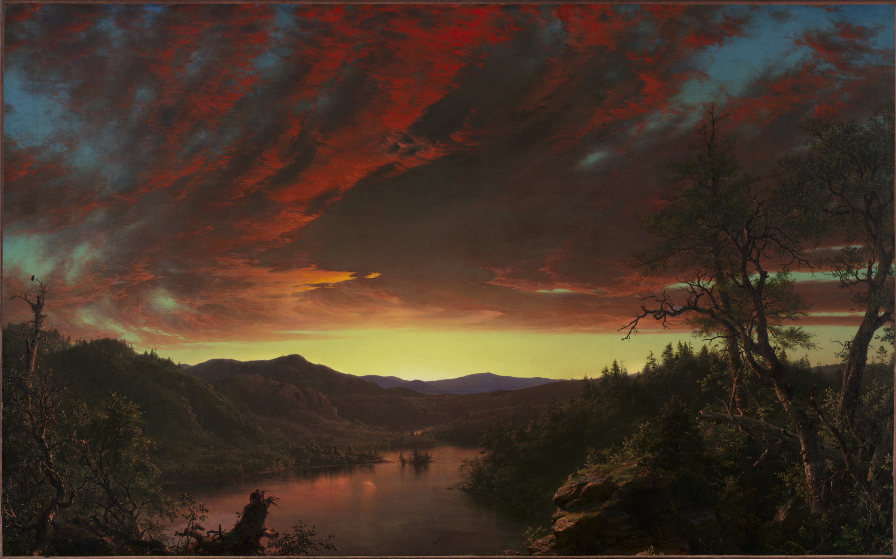
황야의 황혼
Twilight in the Wilderness
· 1860
Frederic Edwin Church (American, 1826–1900)
빛과 풍경
작품 정보와 출처
oil on canvas
Unframed: 101.6 x 162.6 cm (40 x 64 in.); Framed: 124 x 185 x 13 cm (48 13/16 x 72 13/16 x 5 1/8 in.)
The Cleveland Museum of Art · 1965.233
3400 × 2123px · CC0
미술관 원문 ↗ · 공개 이용 정책 ↗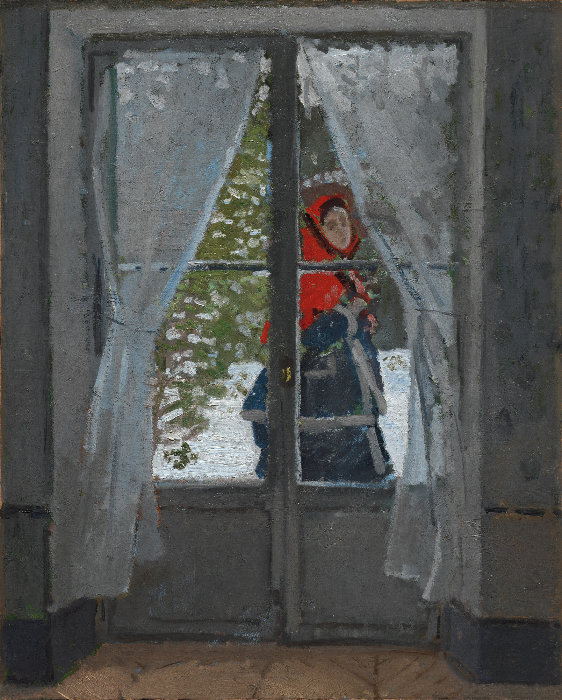
붉은 스카프
The Red Kerchief
· c. 1868–73
Claude Monet (French, 1840–1926)
인물과 일상
작품 정보와 출처
oil on fabric
Framed: 128.3 x 105.7 x 14.6 cm (50 1/2 x 41 5/8 x 5 3/4 in.); Unframed: 99 x 79.8 cm (39 x 31 7/16 in.)
The Cleveland Museum of Art · 1958.39
2732 × 3400px · CC0
미술관 원문 ↗ · 공개 이용 정책 ↗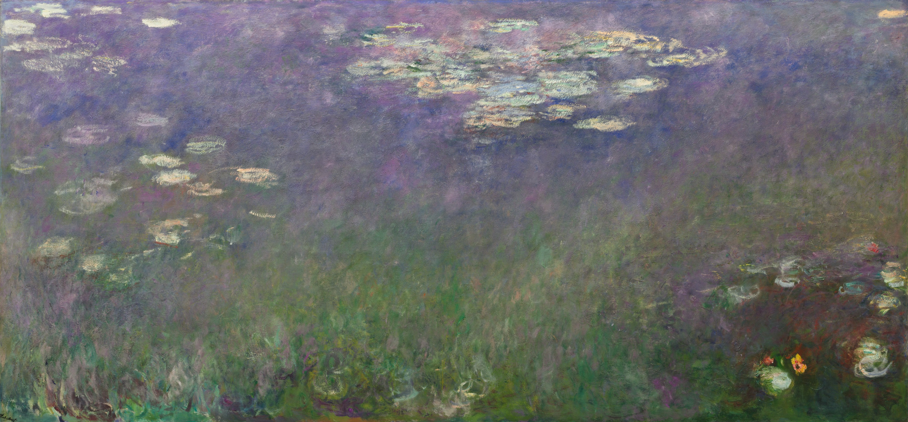
수련 — 아가판투스
Water Lilies (Agapanthus)
· c. 1915–26
Claude Monet (French, 1840–1926)
꽃과 사물 · 빛과 풍경
작품 정보와 출처
oil on canvas
Framed: 204.9 x 430.3 x 6 cm (80 11/16 x 169 7/16 x 2 3/8 in.); Unframed: 201.3 x 425.6 cm (79 1/4 x 167 9/16 in.)
The Cleveland Museum of Art · 1960.81
3400 × 1581px · CC0
미술관 원문 ↗ · 공개 이용 정책 ↗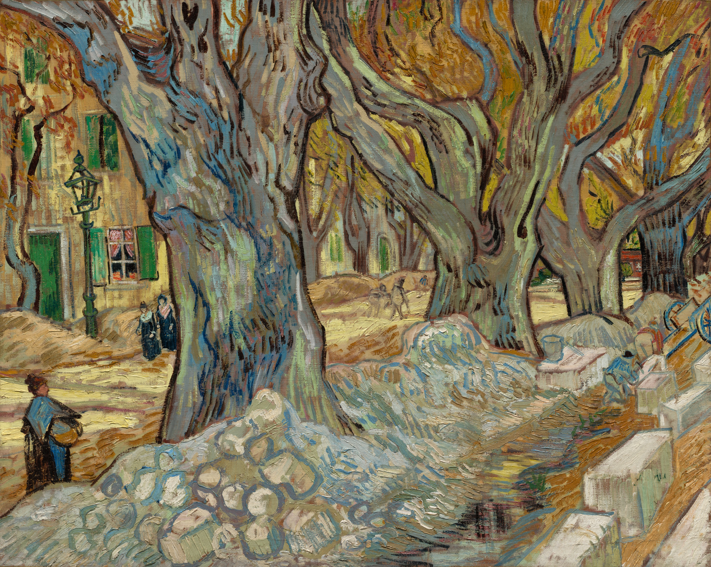
커다란 플라타너스 — 생레미의 도로 보수공들
The Large Plane Trees (Road Menders at Saint-Rémy)
· 1889
Vincent van Gogh (Dutch, 1853–1890)
빛과 풍경 · 인물과 일상
작품 정보와 출처
oil on fabric
Framed: 104.5 x 124.5 x 7.6 cm (41 1/8 x 49 x 3 in.); Unframed: 73.4 x 91.8 cm (28 7/8 x 36 1/8 in.)
The Cleveland Museum of Art · 1947.209
3400 × 2713px · CC0
미술관 원문 ↗ · 공개 이용 정책 ↗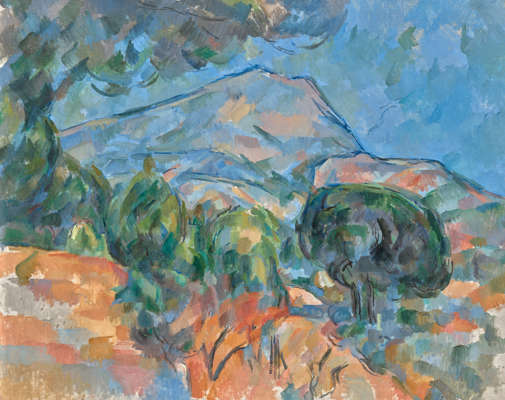
생트빅투아르산
Mount Sainte-Victoire
· c. 1904
Paul Cezanne (French, 1839–1906)
빛과 풍경
작품 정보와 출처
oil on fabric
Framed: 87.5 x 106.5 x 7 cm (34 7/16 x 41 15/16 x 2 3/4 in.); Unframed: 72.2 x 92.4 cm (28 7/16 x 36 3/8 in.)
The Cleveland Museum of Art · 1958.21
3400 × 2697px · CC0
미술관 원문 ↗ · 공개 이용 정책 ↗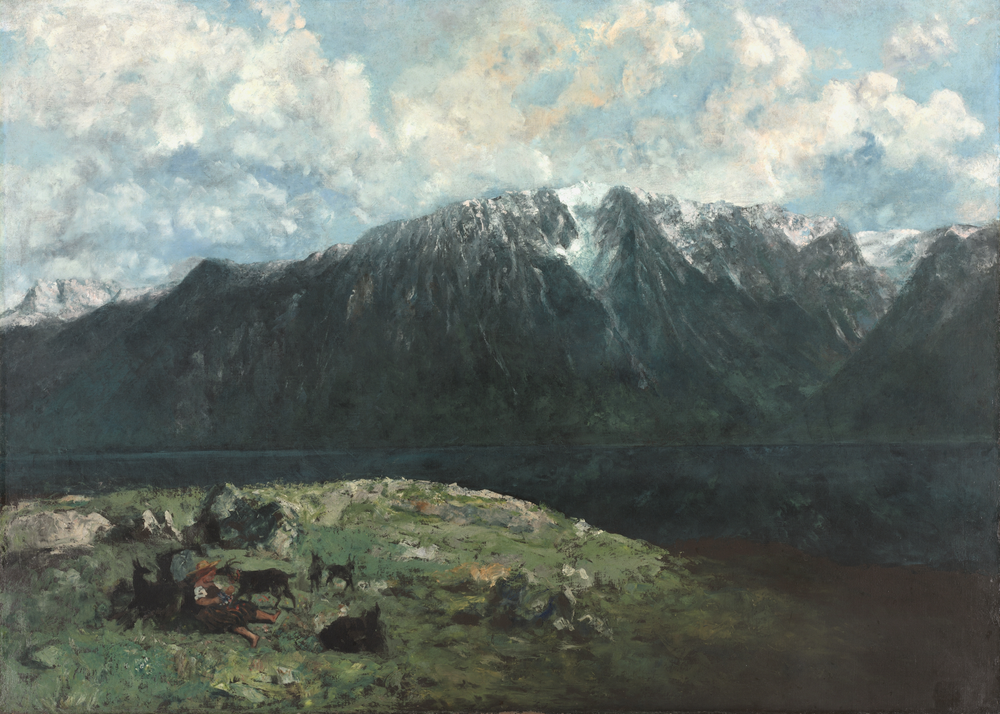
알프스의 파노라마 — 당 뒤 미디
Panoramic View of the Alps, Les Dents du Midi
· 1877
Gustave Courbet (French, 1819–1877)
빛과 풍경
작품 정보와 출처
oil on fabric
Framed: 172 x 230 x 8.5 cm (67 11/16 x 90 9/16 x 3 3/8 in.); Unframed: 151.2 x 210.2 cm (59 1/2 x 82 3/4 in.)
The Cleveland Museum of Art · 1964.420
3400 × 2428px · CC0
미술관 원문 ↗ · 공개 이용 정책 ↗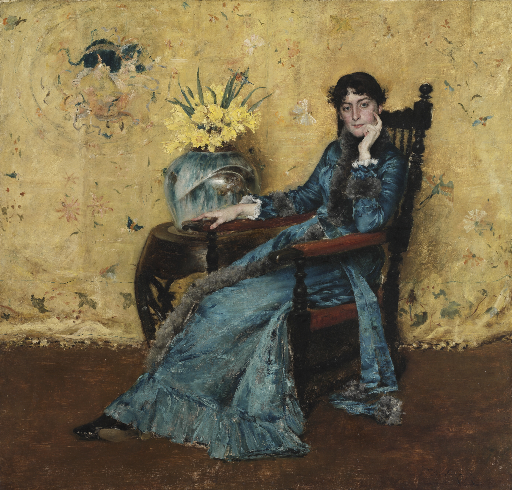
도라 휠러의 초상
Portrait of Dora Wheeler
· 1882–83
William Merritt Chase (American, 1849–1916)
인물과 일상
작품 정보와 출처
oil on canvas
Framed: 180.6 x 188.6 x 11 cm (71 1/8 x 74 1/4 x 4 5/16 in.); Unframed: 159.8 x 166.4 cm (62 15/16 x 65 1/2 in.)
The Cleveland Museum of Art · 1921.1239
3400 × 3254px · CC0
미술관 원문 ↗ · 공개 이용 정책 ↗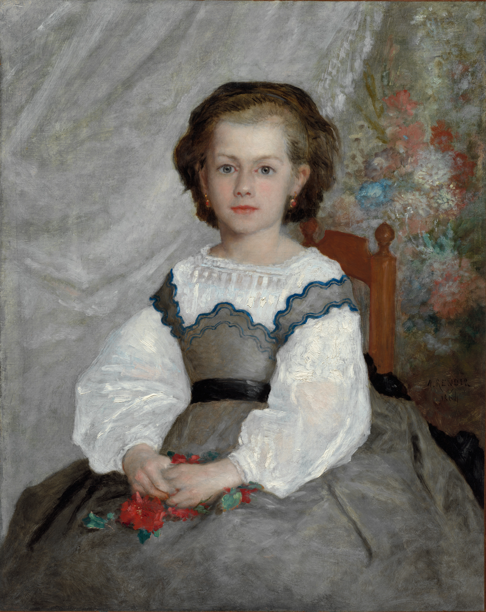
로멘 라코
Romaine Lacaux
· 1864
Pierre-Auguste Renoir (French, 1841–1919)
인물과 일상
작품 정보와 출처
oil on fabric
Framed: 106.7 x 89.2 x 8.9 cm (42 x 35 1/8 x 3 1/2 in.); Unframed: 81.3 x 65 cm (32 x 25 9/16 in.)
The Cleveland Museum of Art · 1942.1065
2706 × 3400px · CC0
미술관 원문 ↗ · 공개 이용 정책 ↗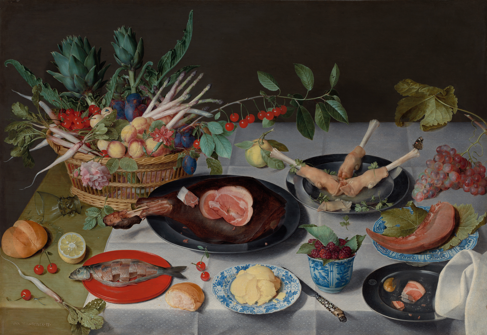
고기·생선·채소·과일이 있는 정물
Still Life with Meat, Fish, Vegetables, and Fruit
· c. 1615–20
Jacob van Hulsdonck (Flemish, 1582–1647)
꽃과 사물
작품 정보와 출처
Oil on panel, the reverse prepared with gesso
71.5 x 104 cm (28 1/8 x 40 15/16 in.)
The Cleveland Museum of Art · 2018.258
3400 × 2344px · CC0
미술관 원문 ↗ · 공개 이용 정책 ↗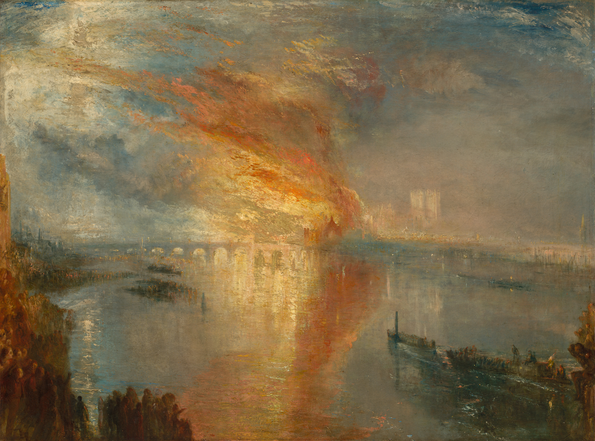
1834년 10월 16일 영국 의회의 화재
The Burning of the Houses of Lords and Commons, 16 October 1834
· 1835
Joseph Mallord William Turner (British, 1775–1851)
빛과 풍경
작품 정보와 출처
oil on canvas
Framed: 123.5 x 153.5 x 12 cm (48 5/8 x 60 7/16 x 4 3/4 in.); Unframed: 92 x 123.2 cm (36 1/4 x 48 1/2 in.)
The Cleveland Museum of Art · 1942.647
3400 × 2525px · CC0
미술관 원문 ↗ · 공개 이용 정책 ↗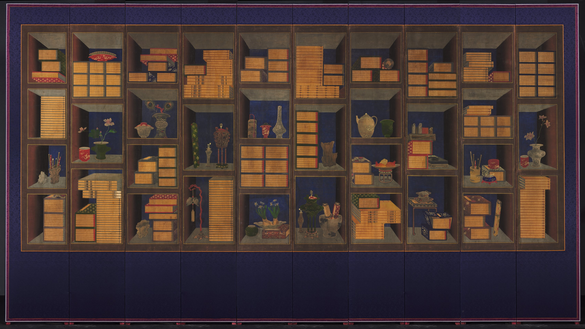
책과 문방 기물
Books and Scholars’ Accoutrements
· late 1800s
Yi Taek-gyun (Korean, 1808–after 1883)
동아시아의 장면 · 꽃과 사물
작품 정보와 출처
ten-panel folding screen; ink and color on silk
Overall: 197.5 x 395 cm (77 3/4 x 155 1/2 in.); Painting only: 139.3 x 330.8 cm (54 13/16 x 130 1/4 in.)
The Cleveland Museum of Art · 2011.37
3400 × 1915px · CC0
미술관 원문 ↗ · 공개 이용 정책 ↗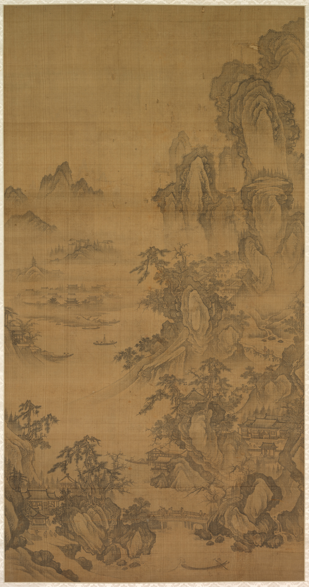
안개가 걷히는 산촌의 시장
Mountain Market, Clear with Rising Mist
작가 미상 · early 1500s
Unknown
동아시아의 장면 · 빛과 풍경
작품 정보와 출처
Hanging scroll; ink on silk
Painting: 115.3 x 60 cm (45 3/8 x 23 5/8 in.); Overall: 179 x 70.7 cm (70 1/2 x 27 13/16 in.); Overall with knobs and cord: 181.8 x 77 cm (71 9/16 x 30 5/16 in.)
The Cleveland Museum of Art · 2015.517
1795 × 3400px · CC0
미술관 원문 ↗ · 공개 이용 정책 ↗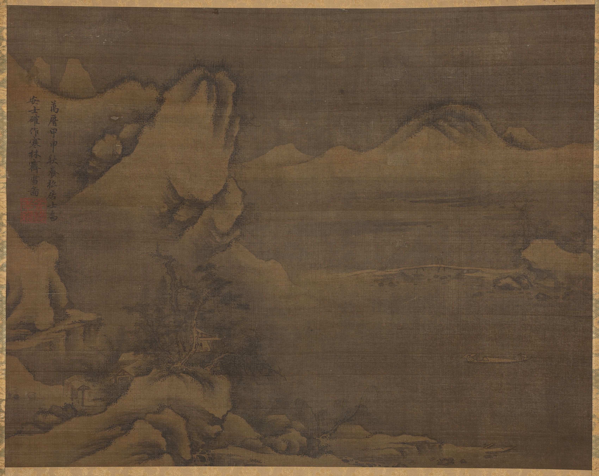
인물이 있는 설경
Snowscape with Figures
· 1584
Kim Si (Korean, 1524–1593)
동아시아의 장면 · 빛과 풍경
작품 정보와 출처
hanging scroll; ink on silk
Painting only: 53 x 67.3 cm (20 7/8 x 26 1/2 in.); Overall: 148.6 x 90.2 cm (58 1/2 x 35 1/2 in.)
The Cleveland Museum of Art · 1987.187
3400 × 2707px · CC0
미술관 원문 ↗ · 공개 이용 정책 ↗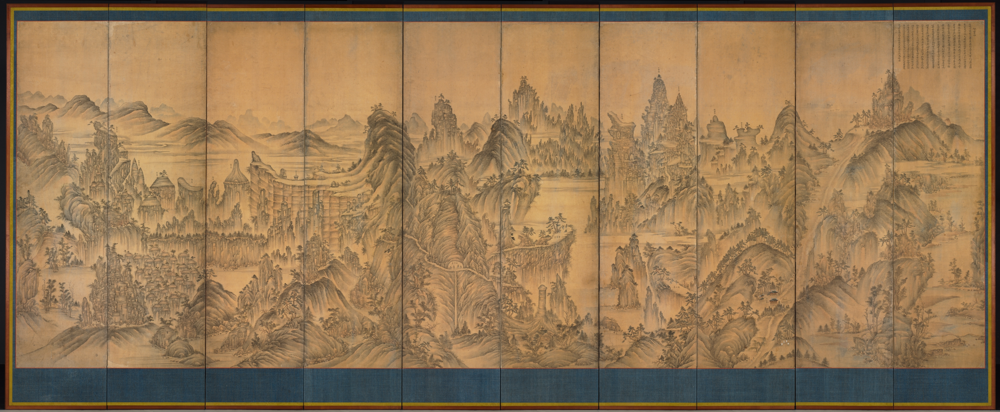
칠보산
Seven Jeweled Mountain
작가 미상 · late 1800s
Unknown
동아시아의 장면 · 빛과 풍경
작품 정보와 출처
ten-panel screen; ink and color on silk
Overall: 185.2 x 42.9 cm (72 15/16 x 16 7/8 in.); Each screen: 158.2 x 42.9 cm (62 5/16 x 16 7/8 in.)
The Cleveland Museum of Art · 1989.6
3400 × 1403px · CC0
미술관 원문 ↗ · 공개 이용 정책 ↗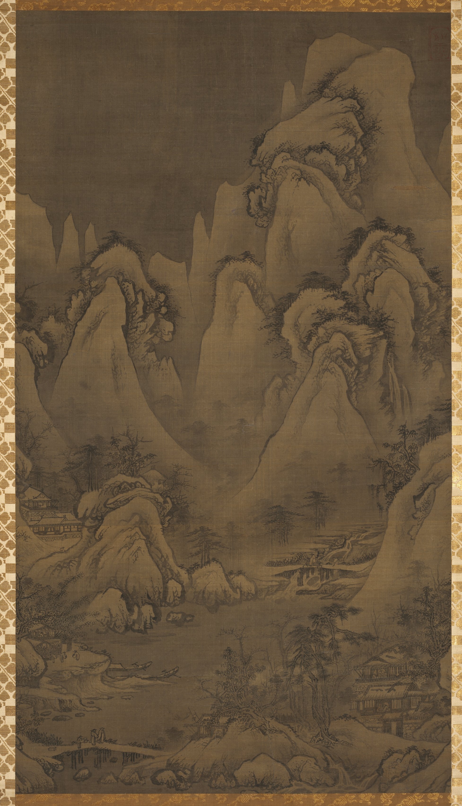
겨울 풍경
Winter Landscape
· 1500s
Yeoseol (Korean)
동아시아의 장면 · 빛과 풍경
작품 정보와 출처
hanging scroll; ink and slight color on silk
Image: 92.4 x 52.7 cm (36 3/8 x 20 3/4 in.); Overall: 195.6 x 74.9 cm (77 x 29 1/2 in.)
The Cleveland Museum of Art · 1986.45
1954 × 3400px · CC0
미술관 원문 ↗ · 공개 이용 정책 ↗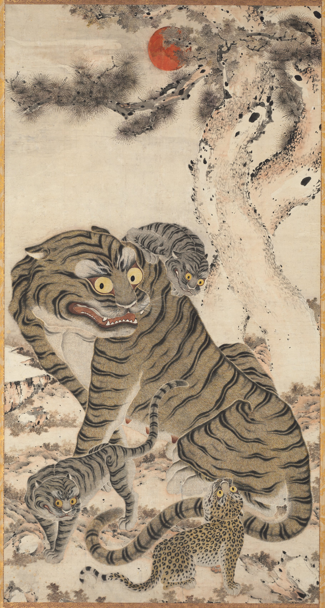
호랑이 가족
Tiger Family
작가 미상 · late 1800s
Unknown
동아시아의 장면
작품 정보와 출처
hanging scroll; ink and color on paper
Image: 170 x 90.4 cm (66 15/16 x 35 9/16 in.); Overall: 262.5 x 115.1 cm (103 3/8 x 45 5/16 in.)
The Cleveland Museum of Art · 1997.148
1820 × 3400px · CC0
미술관 원문 ↗ · 공개 이용 정책 ↗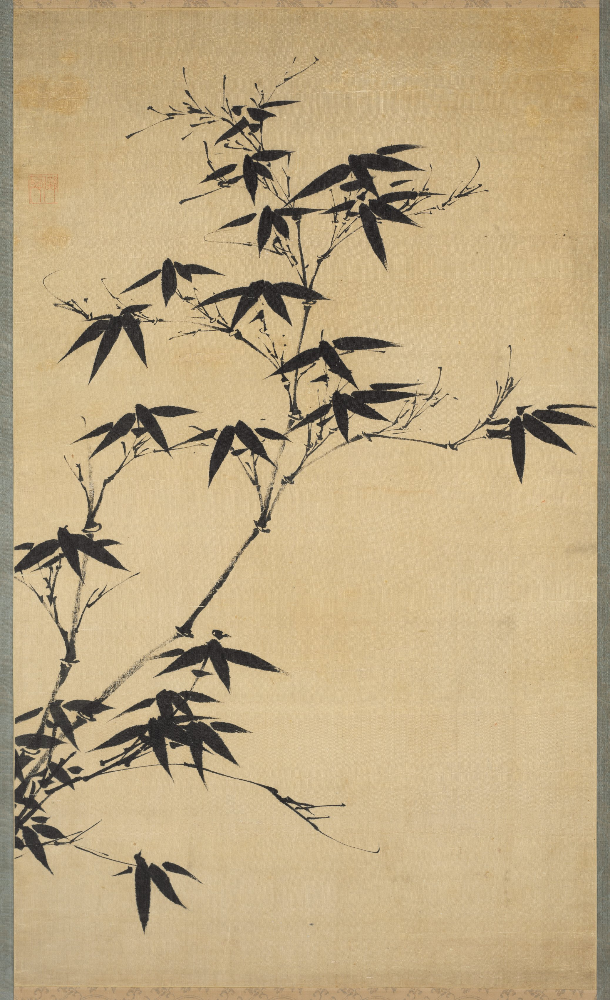
대나무
Bamboo
작가 미상 · 1900s
Unknown
동아시아의 장면 · 꽃과 사물
작품 정보와 출처
hanging scroll; ink on silk
Painting only: 95.3 x 55.9 cm (37 1/2 x 22 in.); Overall: 189.1 x 70.5 cm (74 7/16 x 27 3/4 in.)
The Cleveland Museum of Art · 1999.169
2076 × 3400px · CC0
미술관 원문 ↗ · 공개 이용 정책 ↗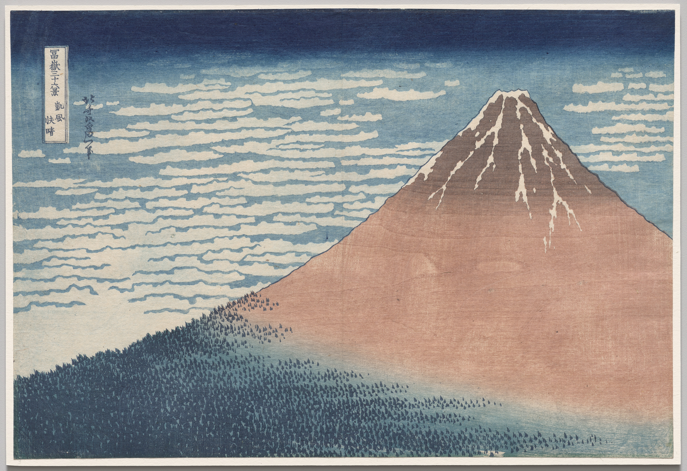
후지산 36경 — 가이후 쾌청
South Wind, Clear Sky, from Thirty-Six Views of Mount Fuji
· early 1830s
Katsushika Hokusai (Japanese, 1760–1849)
동아시아의 장면 · 빛과 풍경
작품 정보와 출처
color woodblock print
25.6 x 37.5 cm (10 1/16 x 14 3/4 in.)
The Cleveland Museum of Art · 1930.189
3400 × 2329px · CC0
미술관 원문 ↗ · 공개 이용 정책 ↗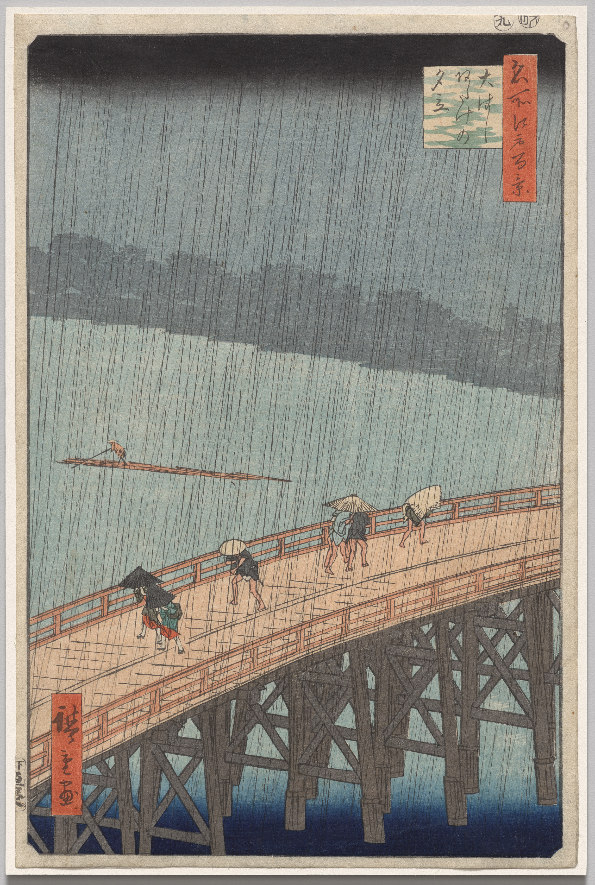
신오하시 다리와 아타케의 소나기
Sudden Shower over Shin-Ōhashi Bridge and Atake, from One Hundred Famous Views of Edo
· 1857
Utagawa Hiroshige (Japanese, 1797–1858)
동아시아의 장면 · 빛과 풍경
작품 정보와 출처
color woodblock print
35.3 x 23.2 cm (13 7/8 x 9 1/8 in.)
The Cleveland Museum of Art · 1921.318
2285 × 3400px · CC0
미술관 원문 ↗ · 공개 이용 정책 ↗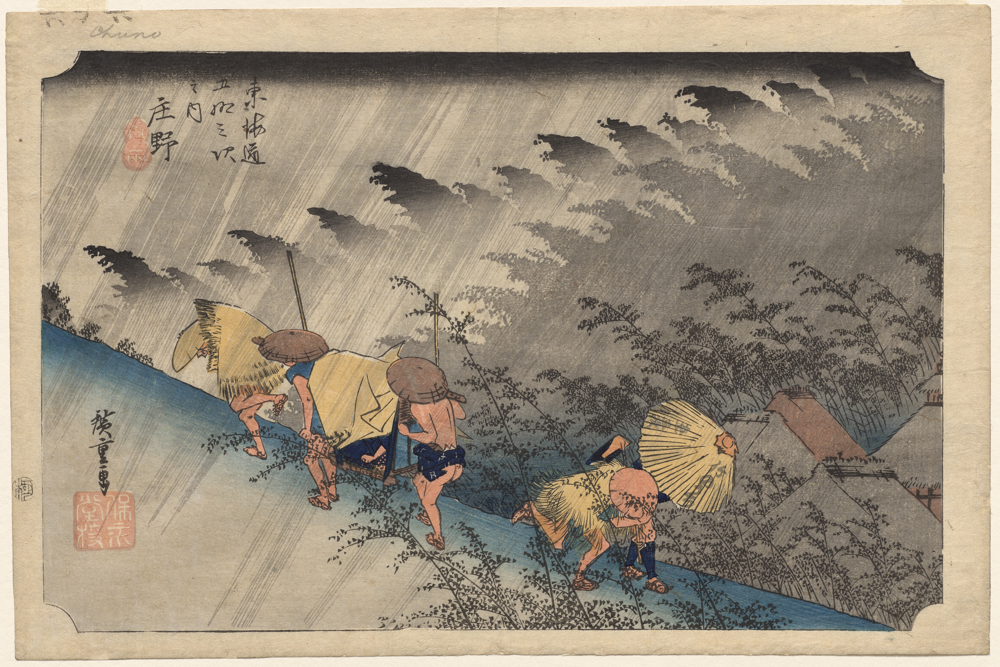
도카이도 53역 — 쇼노의 소나기
Driving Rain at Shōno, from Fifty-Three Stations of the Tokaidō
· 1833
Utagawa Hiroshige (Japanese, 1797–1858)
동아시아의 장면 · 빛과 풍경
작품 정보와 출처
color woodblock print
38 x 25.4 cm (14 15/16 x 10 in.)
The Cleveland Museum of Art · 1948.306
3400 × 2270px · CC0
미술관 원문 ↗ · 공개 이용 정책 ↗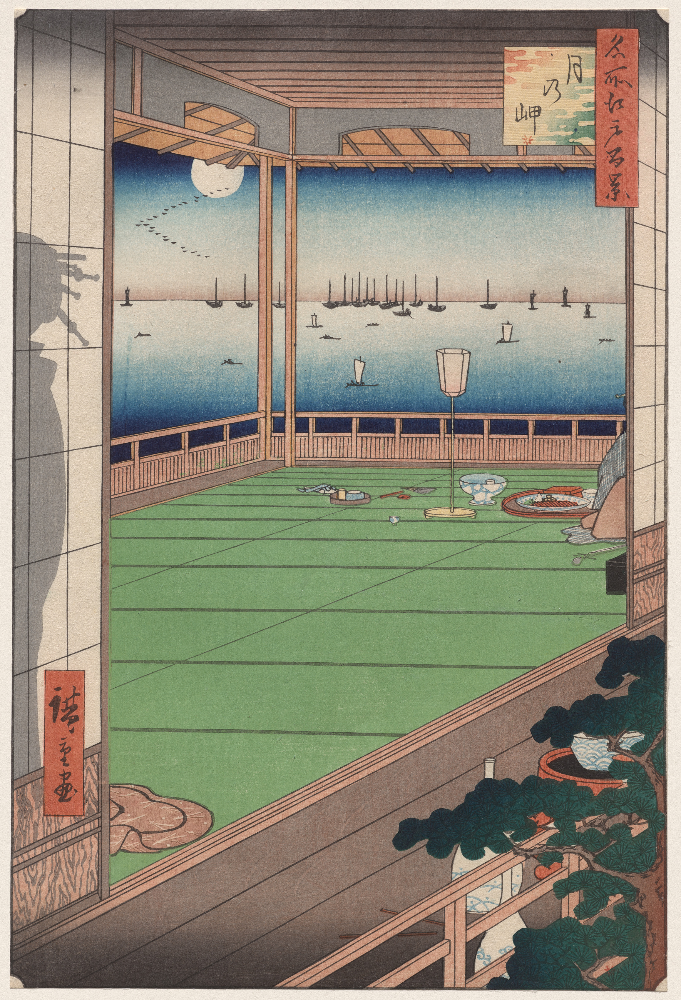
에도 명소 백경 — 달맞이 곶
The Moon-Viewing Promontory, from One Hundred Views of Famous Places in Edo
· 1857
Utagawa Hiroshige (Japanese, 1797–1858)
동아시아의 장면 · 빛과 풍경
작품 정보와 출처
color woodblock print
33.9 x 22.8 cm (13 3/8 x 9 in.)
The Cleveland Museum of Art · 1985.320
2317 × 3400px · CC0
미술관 원문 ↗ · 공개 이용 정책 ↗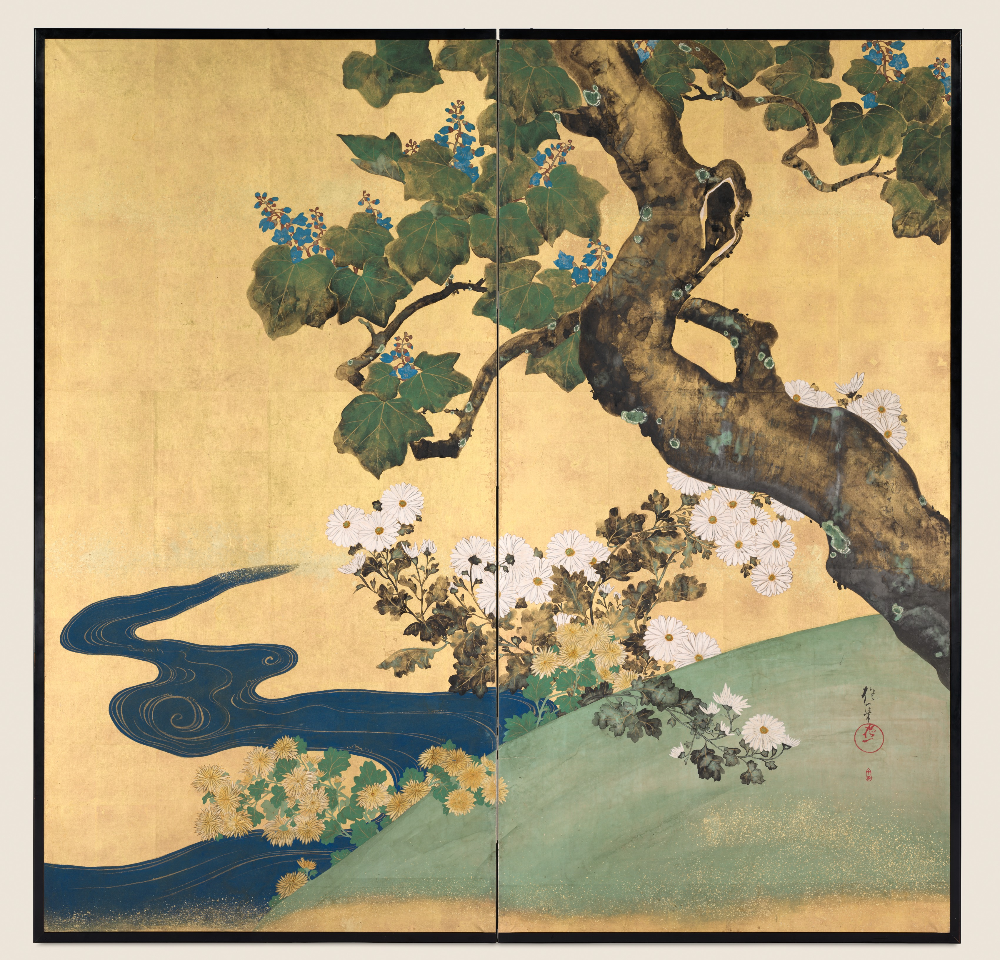
오동나무와 국화
Paulownias and Chrysanthemums
· early 1800s
Sakai Hōitsu (Japanese, 1761–1828)
동아시아의 장면 · 꽃과 사물
작품 정보와 출처
Two-panel folding screen; ink and color on gilded paper
Image: 152.7 x 154.9 cm (60 1/8 x 61 in.); Overall: 157.5 x 158.5 cm (62 x 62 3/8 in.)
The Cleveland Museum of Art · 1964.386
3400 × 3264px · CC0
미술관 원문 ↗ · 공개 이용 정책 ↗